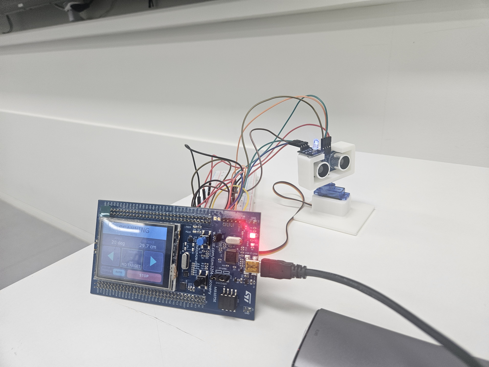
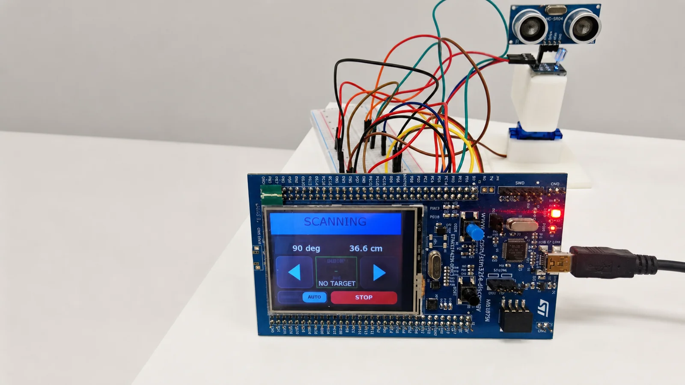
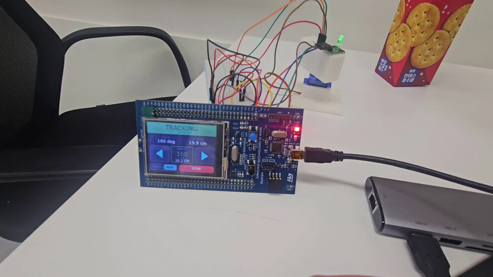
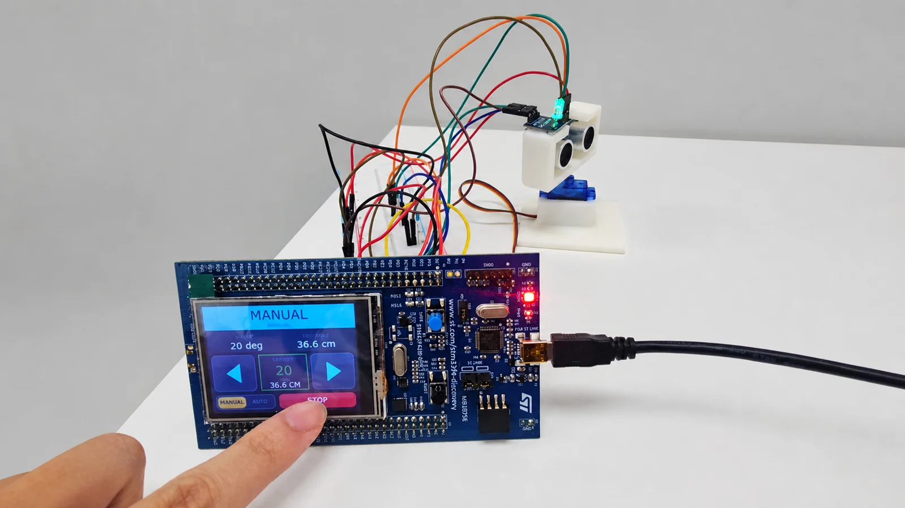
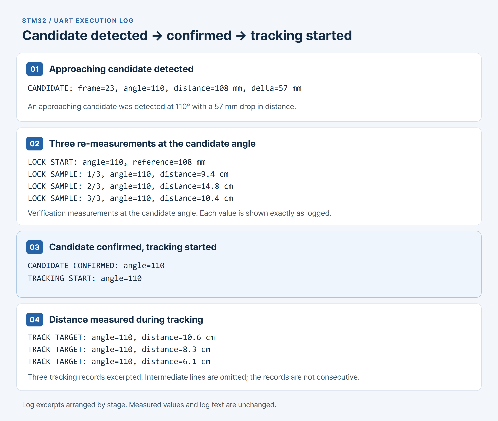

A distance change at one angle could not separate a real object from a one-off outlier.
EMBEDDED SOFTWARE, REAL-TIME SYSTEM
STM32 ultrasonic target detection and tracking
In this personal FreeRTOS project, a servo sweeps a single HC-SR04 back and forth to build distance frames by angle. Only approaching objects that pass spatial-continuity and repeated-measurement checks are confirmed as targets.
- Period
- 2026.06–2026.08
- Platform
- STM32F429, HC-SR04, SG90
- Role
- Personal project; full design and implementation
- Stack
- C, FreeRTOS / CMSIS-RTOS2, HAL, TouchGFX

STM32F429TouchGFX boardHC-SR04
Ultrasonic sensorSG90
ServoRGB LED
01 / PURPOSE
Goal
The goal was a system that runs the full loop automatically on a limited sensor and MCU budget: scan the surroundings, confirm and track a target, decide when it is lost, and scan again.
Measuring while the servo moved meant the actual angle and the distance reading did not line up in time.
Several functions could try to drive the same GPIO and timers at once.
Scan, tracking and lost states and the distance had to be shown in real time.
02 / ARCHITECTURE
RTOS architecture
INPUTTouchGFXHC-SR04 Echo
CONTROLScanControllerTaskState transitions and overall sequencing
WORKERSServoTaskUltrasonicTaskTrackingTaskLedTask
OUTPUTPWM / GPIOGUI / UART
- TasksFive separate tasks: Scan, Servo, Ultrasonic, Tracking and Led.
- MessagesRequests and responses travel through ten queues and are matched by sequence number.
- OwnershipOnly the task dedicated to each peripheral touches its GPIO, PWM or input capture.
- GUI policyStale states are dropped; TouchGFX shows only the latest state.
03 / STATE MACHINE
Detection and tracking flow
Operator statesSTOPPED and MANUAL are user-operated states, separate from the automatic detection flow.
04 / DEMO
Integrated operation
05 / EVIDENCE
Results by function




Show log text
UART / CANDIDATE → TRACKING
CANDIDATE: frame=23, angle=110, distance=108 mm, delta=57 mm
LOCK START: angle=110, reference=108 mm
LOCK SAMPLE: 1/3, angle=110, distance=9.4 cm
LOCK SAMPLE: 2/3, angle=110, distance=14.8 cm
LOCK SAMPLE: 3/3, angle=110, distance=10.4 cm
CANDIDATE CONFIRMED: angle=110
TRACKING START: angle=110
TRACK TARGET: angle=110, distance=10.6 cm
TRACK TARGET: angle=110, distance=8.3 cm
TRACK TARGET: angle=110, distance=6.1 cmThree tracking records are excerpted; intermediate lines are omitted.
Scan frames and comparison rules
A valid frame: an echo was received at all 15 angles.
Only frames from the same sweep direction are compared to compute the approach change at each angle.
06 / DESIGN DECISIONS
Four design choices that reduced false behavior
Measure after the servo settles
The SG90 has no angle feedback, so instead of measuring right after a PWM change, the echo is read after a 100 ms settling time.
Compare frames from the same direction
Forward and reverse sweeps are never mixed; only the distance change at the same angle is computed.
Approach changes are judged on a consistent basis.Spatial continuity plus repeated measurement
A candidate is created only when the change continues across two adjacent angles, and confirmed as a target when 2 of 3 measurements at that position agree.
This suppresses false detections from the wide beam and one-off reflections.Send only the latest state to the display
When the GUI queue backs up, old screen data is dropped and the current state goes first.
07 / RESULT
What was completed
AUTO
Detection, tracking, loss and rescanning run automatically
The SCANNING → CANDIDATE → DETECTED → TRACKING → LOST → SCANNING loop is automated; STOPPED and MANUAL are separate operator states.
- Sensor driversHC-SR04 input capture and distance conversion; SG90 PWM control.
- Real-time structureFive main FreeRTOS control tasks and ten message queues, with timeouts and sequence-number response matching.
- Decision logicSweep-frame comparison, approach-candidate verification, target tracking and loss detection.
- Operator screenTouchGFX AUTO, MANUAL, START and STOP commands with state display.
- VerificationConfirmed with a 30-second integrated demo, per-state screenshots and real UART logs.